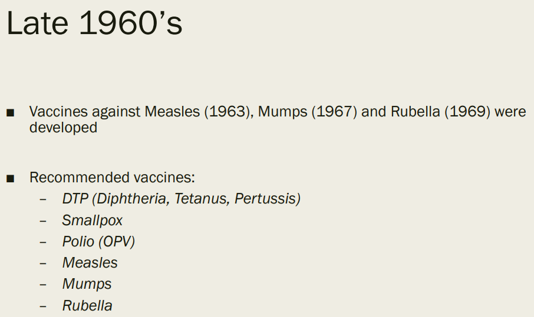
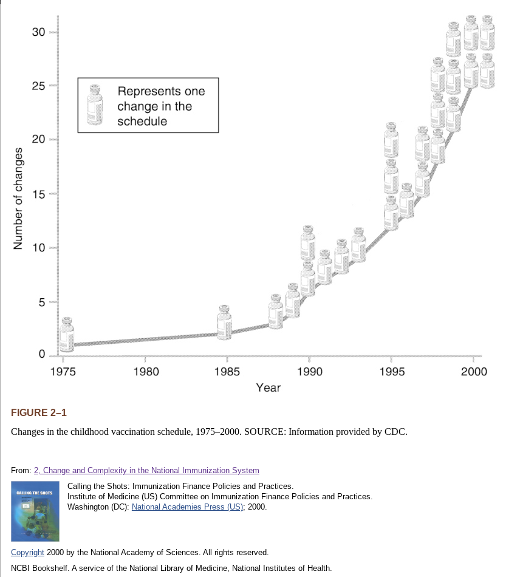
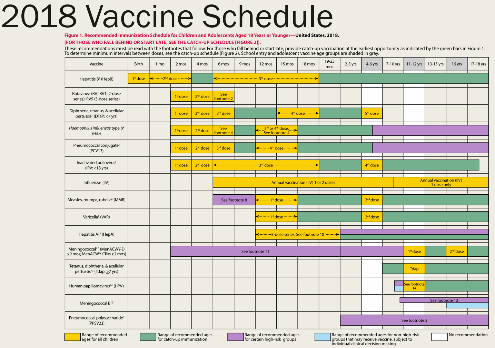

all-knowledge
Contents:
Covid Medical Treatments
Legal Issues
Vaccines
Dr Sherri Tenpenny explains 7 mechanisms in mRNA vaccines
COVID-19 Vaccines In the News
Children’s Vaccine Recommended / Required / Widely Available Schedule 1960’s to 2018
1970-Vaccine-Schedule
1985 Vaccine Usage USA
Changes in the childhood vaccination schedule 1975-2000
Vaccines in Widespread Use 1985-2020
1994-1995 Vaccine Schedule
1995 Vaccine Schedule
2018 Vaccine Schedule
24 get virus between first and second vaccine Gatineau nursing home
What is the history of vaccines, how much money and what are they used for
A History of Pfizer
A history of Johnson & Johnson
The Dodgy Dealings of Pfizer Exposed
Over 12,000 people test positive for COVID-19 after receiving Pfizer vaccine
Vaccine Books
What is the history of vaccines, how much money and what are they used for
What funding and research has been done with vaccines and fertility management
What funding and research has been done with vaccines and nano particles
What are nano particles
Who was Harvard Chemistry Department Chair and nano particle expert Charles Lieber and why was he arrested
Charts and Graphs
Food Safety
FAQ Frequently Asked Questions
What is the historical background and timeline of key participants of this pandemic
Events in Medical History we might want to consider
WHO World Health Organization
WEF World Economic Forum
Media and Influencers
Advice for living
Words of Wisdom from Famous People
Resources and additional background material
Letter to the town of Brookine Massachusetts
How you can help
license
help
test2
all-knowledge
»
Vaccines
»
Children’s Vaccine Recommended / Required / Widely Available Schedule 1960’s to 2018
View page source
Children’s Vaccine Recommended / Required / Widely Available Schedule 1960’s to 2018
¶
1970-Vaccine-Schedule
¶

1985 Vaccine Usage USA
¶
Changes in the childhood vaccination schedule 1975-2000
¶

Vaccines in Widespread Use 1985-2020
¶
1994-1995 Vaccine Schedule
¶
1995 Vaccine Schedule
¶
2018 Vaccine Schedule
¶

Last change: Tue, 09 Mar 2021 01:40 PM -0500


{kind=link}
{kind=link}
{kind=link}